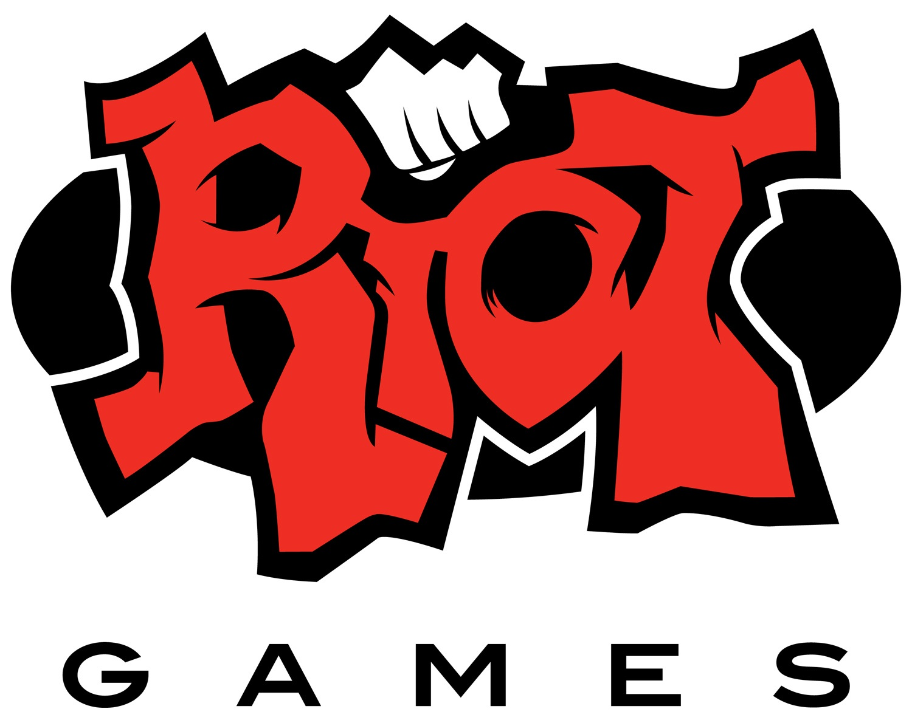
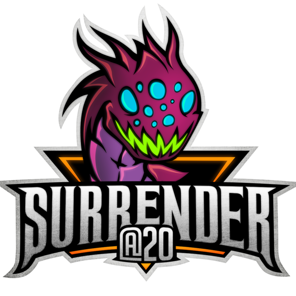

Collegiate Editorial Consultant
Riot Games
August 2015 - Present
- Supervise freelancers to ensure on-time delivery, quality, and tone
- Develop content and engagement opportunities through social media channels
- Create editorial goals and features targeting college students in 300+ North American campuses
- Deliver quality content and production on tight deadlines to maintain player expectations and increase player engagement
- Represent collegiate team at editorial and trafficking meetings, assuring project visibility and on-time asset delivery

Content Production Intern
Riot Games
Summer 2015
- Produced content that gave insight into game development processes via articles, AMAs, etc.
- Achieved effective player engagement through multiple memorable features - two of which were published internationally
- Curated content featuring multiple League of Legends community members who create videos, articles, podcasts, etc.
- Delivered high-quality content in fast-paced environment

Dedicated Blogger/Freelance Writer
Surrender@20 and Lolesports.com
2012-2015
- Managed and maintained a diverse community with over 1 million daily visitors
- Produced video content, news releases, and editorial content
- Formatted site content using HTML/CSS
- Summarized press releases into clear and concise bullet points to inform the community
- Utilized data and feedback to improve products and identify new engagement opportunities